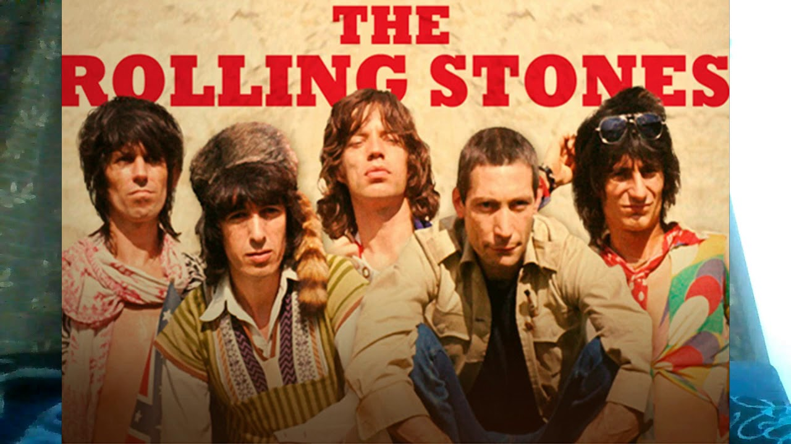

The Rolling Stones
 The Rolling Stones (англ. Роллинг Стоунз, «Перекати-поле») — британская рок-группа, образовавшаяся в 1962 году и многие годы соперничавшая по популярности с The Beatles. Rolling Stones, ставшие важной частью Британского вторжения, считаются одной из самых влиятельных и успешных групп в истории рока. Музыкальный стиль Rolling Stones, формировавшийся под влиянием Роберта Джонсона (Robert Johnson), Чака Берри (Chuck Berry), Бо Диддли (Bo Diddley) и Мадди Уотерса (Muddy Waters), с течением времени обретал индивидуальные черты; авторский дуэт Джаггер-Ричардс получил в конечном итоге всемирное признание. Группа выпустила в Великобритании двадцать два студийных и восемь концертных альбомов (в США - соответственно 24 и 9). Двадцать один сингл входил в первую десятку UK Singles Chart, 8 из них поднимались на вершину хит-парада; соответствующие показатели Rolling Stones в Billboard Hot 100 — 28 и 8. Общемировой тираж альбомов Rolling Stones превысил 250 миллионов, 200 миллионов из них были проданы в США; по этим показателям группа является одной из самых успешных в истории. В 1989 году Rolling Stones были включены в Зал славы рок-н-ролла, а в 2004 году заняли четвёртое место в списке 50 величайших исполнителей всех времён по версии журнала Rolling Stone.
Популярные песни:
Paint It Black
Paint It, Black
(I Can't Get No) Satisfaction
Anybody Seen My Baby?
Angie